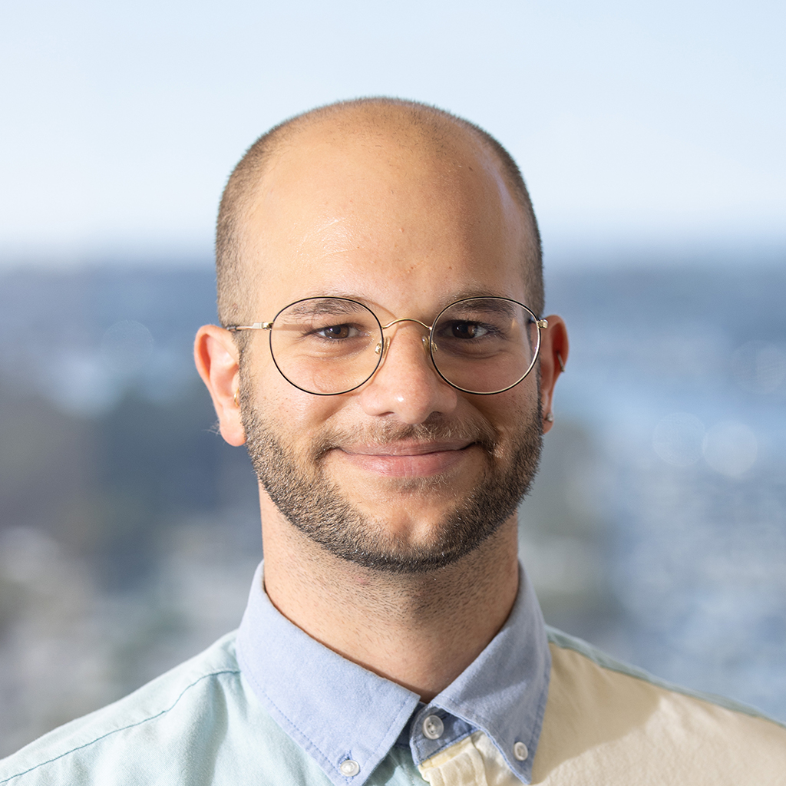

Basel Shbita
Scientist | Artist | Engineer

academic handles
art handles
Basel Shbita (Arabic: باسل شبيطة; Hebrew: באסל שביטה; Russian: Басель Шбита) is a Ph.D. candidate in the Computer Science Department at University of Southern California (USC) in Los Angeles. Basel serves as a research assistant at the Center on Knowledge Graphs at USC's Information Sciences Institute (ISI) where Prof. Craig Knoblock advises him.
Basel's research focuses on techniques for describing, acquiring, and exploiting data semantics and combining all of these techniques to build knowledge graphs, as a means to solve complex information integration problems. At ISI, Basel is currently partaking in the Linked Maps and Table Understanding projects. His past projects include Model Integration (MINT) and the Alexa Prize Socialbot Grand Challenge 4. If you're interested to read more about Basel's academic research work, please visit this page.
Basel has a proven 10+ years of experience in software engineering, programming, and debugging in various languages and has assumed several tech lead roles in the past. Before joining USC, Basel worked for Mellanox Technologies (acquired by Nvidia) between 2011-2017 as a Senior Firmware Engineer and Team Leader in the Switch Silicon Core Department; and for Apple in 2018 as an Embedded Software Engineer in the Flash Storage Software Department. Basel received his B.Sc. degree in Electrical Engineering from Tel Aviv University in 2015.
Besides his research and scientific-academic work, Basel practices plastic and visual arts, including animation, and produces experimental electronic music. You can find Basel's art projects on this page.
Contact at basel921 at gmail dot com or at shbita at usc dot edu.
Teaching
-
TA (Teaching Assistant) for DSCI 558: Building Knowledge Graphs (Fall 2020 @ USC)
-
TA (Teaching Assistant) for CSCI 563/INF 558: Building Knowledge Graphs (Spring 2020 @ USC)
Selected Publications
-
Uhl, J. H., Leyk, S., Li, Z., Duan, W., Shbita, B., Chiang, Y. Y., & Knoblock, C. A. (2021). Combining remote-sensing-derived data and historical maps for long-term back-casting of urban extents. Remote Sensing, 13(18), 3672 ·
link
-
Cho, H., Shbita, B., Shenoy, K., Liu, S., Patel, N., Pindikanti, H., Lee, J. & May, J. (2021). Viola: A Topic Agnostic Generate-and-Rank Dialogue System. In Proceedings of the 4th Alexa Prize ·
link
paper
-
Li, Z., Chiang, Y. Y., Tavakkol, S., Shbita, B., Uhl, J. H., Leyk, S., & Knoblock, C. A. (2020, August). An Automatic Approach for Generating Rich, Linked Geo-Metadata from Historical Map Images. In Proceedings of the 26th ACM SIGKDD International Conference on Knowledge Discovery & Data Mining (pp. 3290-3298) ·
link
paper
-
Shbita, B., Knoblock, C. A., Duan, W., Chiang, Y. Y., Uhl, J. H., & Leyk, S. (2020, May). Building Linked Spatio-Temporal Data from Vectorized Historical Maps. In European Semantic Web Conference (pp. 409-426). Springer, Cham ·
link
paper
code
-
Shbita, B., Vu, B., Feldman, D., Pham, M., Rajendran, A., Knoblock, C. A., Pujara, J., & Chiang, Y. Y. (2019). Creating a FAIR Data Catalog to Support Scientific Modeling. In Workshop on Advanced Knowledge Technologies for Science in a FAIR World (AKTS) ·
paper
-
Shbita, B., Rajendran, A., Pujara, J., & Knoblock, C. A. (2019). Parsing, Representing and Transforming Units of Measure. In Modeling the World’s Systems ·
paper
poster
code
News
-
2021/12:
I displayed my first video-art installation.
-
2021/08:
The Alexa Prize Socialbot Grand Challenge 4 has concluded. Although our socialbot Viola was not part of the finalists, we have come far as first-timer semi-finalists. Very proud of the team!
-
2021/06:
We published 2 papers at the 2nd International Workshop on Knowledge Graph Construction at ESWC 2021: A short paper, and a demo paper. The projects were led by 2 excellent groups of CS MSc students at USC that I've had the honor to TA.
-
2021/05:
Joined GE Research as a research fellow intern for 12 weeks this summer. I will be working at the Artificial Intelligence Technical Domain on a project at the intersection of Machine Learning, Knowledge Discovery, Semantic Web, and NLP.
-
2021/05:
Passed my Ph.D. qualifying exam!
-
2021/05:
Our conversational socialbot Viola has qualified to the semifinals at the Alexa Prize Socialbot Grand Challenge 4!
-
2021/01:
Presented at the USC Artificial Intelligence Symposium: Will AIs Ever Be One of Us? The Symposium included keynote presentations, panels, and talks by USC AI researchers on forward-looking AI research topics on interaction and collaboration.
-
2021/01:
I was featured on VoyageLA Magazine! I was really honored and excited to share my story.
-
2020/11:
Happy to announce that our team from USC will be competing in the Alexa Prize Socialbot Grand Challenge 4, a multimillion-dollar university challenge focused on advancing human-computer interaction!
-
2020/06:
Presented paper (oral) on Building Linked Spatio-Temporal Data from Vectorized Historical Maps at the 17th Extended Semantic Web Conference (ESWC) which was held online (originally planned in Heraklion, Crete, Greece)
-
2019/09:
Presented paper (oral) on Creating a FAIR Data Catalog to Support Scientific Modeling at AKTS 2019. A workshop co-located with the IEEE eScience Conference in San Diego, CA. Our work was referred to as "Science Fiction" by none other than Wikidata's founder; Read about it here!
-
2019/09:
Presented to DARPA the work we are doing in MINT’s Information Integration Group towards a framework for data exploration, information extraction and transformation during the World Modelers' PI meetings in Alexandria, VA
-
2019/05:
Presented paper (oral) and poster on Parsing, Representing and Transforming Units of Measure at MOMACS's 2019 Modeling the World's Systems Conference in Washington, D.C.
-
2018/12:
Delivered a talk at Tira Talks 4 (a TEDx event held in my hometown). I talked about the importance of challenges, change, globalization, diversity and AI. I couldn't be more honored to stand in front of almost 500 people and contribute to the place where I grew-up.